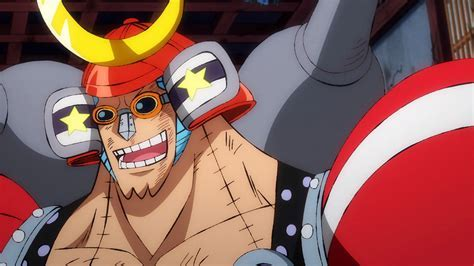

Alias: Cyborg. Jabatan: Tukang Kayu. Tebusan/Bounty: ฿394,000,000
Cyborg" Franky ("鉄人"フランキー "Saibōgu"" Furankī?) adalah anggota kru Bajak Laut Topi Jerami yang bertugas sebagai mekanik kapal Thousand Sunny. Pertama kali muncul sebagai pemimpin Keluarga Franky, sebuah genk bawah tanah yang menguasai jalanan Water 7. Ia bernama asli "Cutty Flam" namun kemudian diganti karena permintaan Iceburg. Ia awalnya menjadi musuh kru topi jerami, namun berubah menjadi teman setelah perkembangan situasi memaksa mereka berbalik mendukung kru topi jerami. Setelah Franky mendapat bounty pertama, Keluarga Franky mendatangi kru topi jerami dan memohon agar merekrutnya. Ia menjadi anggota ke-8 kru topi jerami dan memiliki bounty sebesar 44.000.000 setelah insiden di Enies Lobby. Setelah Bajak Laut Topi Jerami berhasil mengalahkan Keluarga Donquixote di Dressrosa, Franky mendapat kenaikan bounty menjadi 94.000.000. Mimpinya adalah membuat sebuah kapal yang mampu mengarungi segala jenis lautan.
Franky adalah seorang cyborg dengan tubuh yang besar dan kekar. Tingginya mencapai 225 cm menjadikannya kru topi jerami tertinggi kedua setelah Brook. Ia memiliki rambut biru yang disisir rapi ala "Elvis" dan tato motif bintang biru di kedua lengan. Ia terbiasa hanya mengenakan celana dalam sehari-hari, dan sebuah kemeja santai ala pantai yang dibiarkan terbuka tak dikancing dan sebuah kalung rantai emas sebagai aksesoris. Franky sering memakai kacamata hitam, terutama jika ia mulai serius dan selalu bertelanjang kaki kemana-mana. Sebagai hasil modifikasi yang ia lakukan pada tubuhnya sendiri, Franky berubah menjadi cyborg dengan nama "BF-36" dengan bagian depan terbuat dari logam sementara bagian punggung tetap. Bagian perutnya bisa membuka dan terdapat semacam kulkas tempat ia menaruh kola sebagai sumber kekuatan. Beberapa bagian tubuh Franky; terutama tangan bisa dimodifikasi menjadi berbagai bentuk senjata saat ia bertarung. Dua tahun setelah dikirim Bartholomew Kuma ke pulau Karakuri, Franky memodifikasi ulang tubuh cyborgnya. Franky pertama kali terlihat dengan potongan rambut cepak dan dapat mengubah potongan rambutnya dengan menekan hidung selama 3 detik. Bahu, badan dan tangannya menjadi lebih besar, membuat penampilannya menyerupai robot. Bagian punggungnya juga telah diperbaiki sehingga ia kini sepenuhnya dilapisi logam. Ia menggantikan bahunya dengan bola merah besar bertuliskan "BF-37", dengan siku berengsel besar merah muda dan lengan batangan balok besar biru cerah bertatokan bintang seperti ciri khasnya. Telapak tangannya sangat besar dan didalamnya terdapat tangan lain yang lebih kecil yang bisa keluar dan digunakan saat makan. Di dalam bola bahunya, tersimpan senjata rudal yang ia gunakan saat bertarung. Ia masih berpakaian seperti dulu dengan kemeja ala pantai yang dibiarkan tak dikancing dan mengenakan sebuah celana dalam serta tanpa alas kaki.
Franky adalah orang yang berkemauan keras, eksentrik, berjiwa bebas dan sering terang-terangan melanggar aturan. Singkatnya, ia melakukan apapun yang mau, kapan saja dia mau, menurut cara yang dianggapnya benar. Kadang dia muncul sangat eksentrik dengan tindakannya karena berbakat membuat hal-hal yang tidak lazim seperti "Franky Kentaurus" nya. Tergantung pada situasi dan dengan siapa dia berurusan, Franky cenderung cepat tanggap dalam bertindak menyelesaikan masalah seperti saat membela orang lain atau mengambil tindakan jika teman-temannya dirugikan. Hal ini menyebabkan ia sering bertentangan dengan hukum. Karena sifatnya yang peduli dan protektif, ia mudah berteman dengan siapa saja termasuk dari kalangan masyarakat yang tak biasa, seperti preman jalanan atau bajak laut. Ia dipandang sebagai sosok "kakak" dan dikagumi banyak orang, seperti Nico Robin dan Keluarga Franky. Ia dan Luffy memiliki beberapa kesamaan sifat, dengan pengecualian, Franky bersifat lebih dewasa. Keduanya tumbuh saling menghormati satu sama lain selama insiden di Enies Lobby meski pernah saling berseteru di masa lalu. Juga ditunjukkan kalau kepribadian Franky dapat berubah secara instan, tergantung pada jenis minuman yang mempengaruhi sistem kerja tubuhnya. Ia bisa menjadi sangat keras kepala seperti ketika menolak permintaan Iceburg yang menyuruhnya meninggalkan Water 7 untuk menyembunyikan keberadaan cetak biru senjata kuno Pluton.
Kebiasaan lainnya, Franky suka menyebutkan sesuatu yang hebat dengan istilah "Super" seperti "Aku sedang dalam keadaan super kuat, khususnya sepanjang minggu ini". Ketika menyebutkan itu, Ia sering menampilkan pose dengan menyatukan kedua tangannya lurus ke samping kanan atas, dengan bersandar pada lutut kanan yang ditekuk dan kaki lainnya lurus kearah yang berlawanan. Sambil menegakkan kepalanya, kedua tato ditangannya akan bersatu membentuk satu bintang. Dan sebagai efek tambahan, secara komik ada semacam ledakan atau cahaya yang bersinar sebagai latar belakang. Ia juga sering dikaitkan dengan julukan "cabul" akibat cara berpakaiannya. Yang anehnya, Franky justru merasa senang jika seseorang memanggilnya begitu. Saat mendengar suatu cerita atau dalam momen tertentu yang menyentuh hatinya, Franky menjadi lebih empati dan penuh kasih. Ia tak segan menangis tersedu-sedu menunjukkan perasaannya dan secara komik, ditunjukkan ia memainkan sebuah gitar sambil menyanyikan lagu sedih. Namun jika momen itu mengenai dirinya, ia berusaha menyangkal menangis sambil malu menyembunyikan wajahnya, dan memanggil semua orang di sekelilingnya dengan panggilan "bodoh" ketika melihat ia sedang rapuh. Franky tidak pernah menyimpan uang. Ia berpendapat kalau masih memiliki sejumlah uang yang cukup untuk lebih dari satu hari menjadi suatu pemikiran yang mengerikan. Jadi, saat ia menyadari masih memiliki satu juta beri sisa curian dari Usopp, ia segera menghabiskannya dengan membagi-bagikannya kepada pengunjung bar, membelikan mereka minuman. Perilaku ini tampaknya tidak diikuti oleh sisa Keluarga Franky yang ia tinggalkan. Dua tahun setelah timeskip sejak menjalani modifikasi, ia menjadi pusat perhatian dari Luffy, Chopper dan Usopp. Akibatnya ia sering berperan dan berbicara bagai seorang robot untuk menyenangkan mereka.
Kemampuan
Franky adalah seorang tukang kapal dan mekanik yang sangat jenius. Dalam usia yang masih muda, ia sudah mampu menciptakan berbagai kapal dari sampah-sampah sisa. Pembuat kapal legendaris Tom sendiri mengakui jika Franky pada dasarnya sudah berbakat menjadi tukang kapal. Ia juga mampu mengubah dirinya menjadi Cyborg, sebuah ide yang sulit terpikirkan bahkan dengan menggunakan bahan-bahan seadanya. Ia kemudian membuat kapal kru topi jerami, Thousand Sunny yang dianggap sebagai kapal terbaik yang mampu mengarungi seluruh lautan. Tak hanya itu, ia juga menciptakan banyak alat-alat lain yang terbukti banyak membantu dalam petualangan kru topi jerami; seperti kapal selam hiu dan mini merry. Ilmu pertukangannya juga sangat menakjubkan, seperti saat di Thriller Bark, ia membuat sebuah jembatan berkualitas baik dalam waktu singkat, juga dengan bahan-bahan bekas yang ditemukan disekitar. Dalam beberapa kesempatan, ia mampu menciptakan semacam tangga yang seperti melayang meski tidak bertahan lama dan mampu mengunci rapat Caribou dalam sebuah tong secara instan. Setelah terdampar di Barjimoa pulau Karakuri, Franky dapat merealisasikan ide-ide masa kecil Dr. Vegapunk yang terlupakan. Ia mampu mengaplikasikan teknologi laser seperti yang dimiliki Pacifista pada dirinya. Selain itu, kreativitasnya bertambah dengan menciptakan berbagai macam robot; seperti Black Rhino FR-U #4, Brachio Tank #5 dan menyatukannya menjadi "Franky Shogun".
Franky merupakan seorang petarung yang sangat tangguh. Kekuatan fisiknya bisa dibilang yang paling kuat karena ia juga seorang cyborg. Sebelum bergabung dengan kru topi jerami, ia bertahun-tahun menjadi penjarah kapal, pemburu hadiah maupun preman jalanan yang menguasai kota Water 7. Ia mampu mengimbangi Luffy sebelum diganggu kedatangan mandor galley-la. Ia juga telak-telak mengungguli kekuatan Blueno dan dapat memecah "Tekkai"nya sebelum Robb Luci ikut campur. Gaya bertarung Franky mirip dengan petinju meski ia tidak ragu-ragu melawan dengan cara kotor bila diperlukan. Berkat modifikasi yang dilakukannya sendiri, Franky menjadi seorang cyborg dengan tubuh yang dilapisi besi. Akibatnya, ia tak mempan dengan segala macam tembakan atau tusukan. Ia juga kebal dengan ledakan besar, seperti saat laboratorium Dr. Vegapunk meledak, Franky terbukti masih hidup meski tinggal menyisakan tengkorak besi. Namun modifikasinya tidak menyentuh bagian belakang sehingga punggungnya menjadi titik lemah bagi Franky saat bertarung. Baru dua tahun kemudian, ia telah menyelesaikan modifikasinya sehingga dilapisi logam seluruhnya. Modifikasi ini juga memberinya sejumlah ketrampilan dalam bertarung. Perutnya bisa membuka dan terdapat semacam kulkas tempat ia menaruh 3 botol kola sebagai sumber kekuatannya.